Chapter 9 RStudio Analysis Pathway
For lab members using quantitative methods (e.g., neuroscience); not critical but potentially of interest for those working in neuroethics/qualitative methods
This analysis pathway represents one example of our preferred approach to quantitative code and data handling. This pathway has several key aims intended to promote reliable scientific practices (see Reliability and Open Science):
- Ensure the integrity of the dataset. For this reason, after the dataset has been imported from Qualtrics or e-Prime, we never touch the original dataset. No cutting/copying/pasting in Excel!
- Document all the steps that go into a paper or poster. If we exclude a subject, recode a variable or create a new variable, etc. we want to be able to say exactly what we’ve done.
- Keep the ability to repeat everything easily and accurately. For instance,
what if…
- You lose or accidentally write over your data files? (If your source data is still in Qualtrics, can you get back to where you were before without starting from scratch?)
- You collect more data? For instance, you submit a paper with 50 subjects from a Qualtrics instrument and your reviewers ask for a larger sample. So you collect another 50 subjects with the Qualtrics instrument. Can you download your new enlarged dataset and re-run your analyses without reinventing the wheel?
- Utilize literate programming to explain to other lab members and future reviewers what each step is intended to accomplish.
9.1 Basic overview of the pathway
- Review software tools: R, RStudio, GitHub, SourceTree
- Clone the decisionlab repo to your computer (if you haven’t already)
- Save original dataset to the R: drive
- Clean the data with an RMarkdown (.Rmd) saved in GitHub, creating an .html log that is saved to GitHub and a new .Rda data file on the R: drive
- Analyze the data using other .Rmd files (saved in GitHub), generating more .html logs (in GitHub) and more .Rda files as necessary on the R: drive
9.1.1 Other resources
For more background info, start of course with the lab private repository (decisionlab) README.md file. There is an example data cleaning file in AgingCog/analysis/moral-dilemma/moral-dilemma_01_clean-merge-split.Rmd. This pathway is based on the use of .do and .log files in Stata; for more info on that see the Powerpoint “Lecture 2” in R:/groups/chiong/Resources/Biostat_212.
Also, for file naming, variable naming, and other conventions, we will try to follow the Tidyverse Style Guide at style.tidyverse.org. There are also some useful suggestions about file naming in Naming Things and in the OSF Best Practices File Naming Guide.
9.2 Step 0: Review software tools
9.2.1 R
R is a free programming language and statistical/graphics environment, similar to programs like SAS, SPSS, Stata or Matlab. While R is in many respects harder to learn than many of those tools, it’s very useful to know because it’s becoming more widely used in a variety of fields. Because it’s free, it’s more commonly used in undergraduate teaching, and in resource-constrained (e.g. nonprofit or international) environments. Also, because it’s free, use of R is most consistent with principles of open science. That is, if you post a dataset and code that requires paid software like Stata or Matlab, then only people who already own those programs can download and use what you share. Whereas, if you post a dataset and code in R, then anyone in the world can download and use what you share, because they can also download and use R for free. For these reasons, there’s now a very robust and committed user base of people who contribute to and improve R, and R now generally equals or exceeds paid software in reliability and capabilities. Download and install R from www.r-project.org.
BTW, I haven’t read it all, but a very promising introduction to stats in R and RStudio is a free textbook by Russ Poldrack, “Statistical Thinking for the 21st Century,” at statsthinking21.org.
9.2.2 RStudio
RStudio is an open source interface for R that makes it much more user-friendly, and (crucial for our purposes) implements R Markdown, which allows us to create .html logs that preserve and communicate details of our analyses. After installing R, install RStudio from www.rstudio.com/products/rstudio/download/.
Let’s play a little bit with RStudio and R Markdown. (There’s also a useful quick tour at rmarkdown.rstudio.com/authoring_quick_tour.html.) Open RStudio and go to “File > New File > New R Markdown…”. Give the new file a title (“Untitled” is fine for now), put in your name, and select HTML as the default output format. Now you’ll see an RStudio screen with four windows:
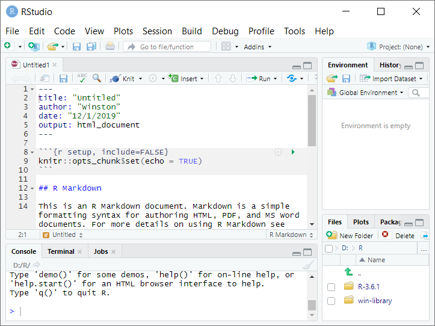
The top left window is the source window, used for editing code. Here we’re editing an R Markdown (.Rmd) file. (If you’re familiar with Stata, this is like the Script Editor.)
The bottom left window is the console. This allows you to run quick operations that you’re not necessarily planning to save in your code file. You can type right next to the > character. Type
1and press Enter–this will return the output[1] 1. Now type4+3and press Enter–this should return the output[1] 7.The upper right window shows your workspace. (It can also be used to review the history of commands.) A nice thing about R is that you can use and manipulate many objects in your workspace (datasets, variables, etc.) at the same time. Back in the console, type
a <- 4+3and press Enter. (“<-” is the assignment operator in R.) Now in the upper right window you should seeaand its value, 7. You can now perform operations with this variable: in the console, typesqrt(a)and press Enter. Or, you can store these outputs in new variables: typeb <- sqrt(a)and press Enter.Finally, the bottom right window shows you the file structure, graphical output, available packages, and help documents.
Look more closely at the source window at top left. If you look at the top,
you may recognize this as an ordinary YAML header, similar to those we use
to post news on our lab website. If you scroll through the starter R Markdown
file provided, you’ll notice that some sections of the file have a white
background, alternating with sections that have a grey background and are
preceded and followed by 3 “backticks” that look like this: ```. This is
an implementation of literate programming:
the sections in white are ordinary Markdown, which is used to explain one’s
reasoning to the reader, and the sections in grey are “code chunks” that contain
instructions for the computer. (The first line of a code chunk will have 3 backticks and then curly brackets enclosing r indicating that the code is in
R language, then optionally a name for the code chunk, then optionally a comma
followed by special parameters for the code chunk.)
To make RStudio use your code, you have two options: run and knit. Often when you’re working on your code you’ll use run. To explore options, pull down the menu for “Run” at the top of the source window:

Now click inside the source window and navigate so that your cursor is inside of the second code chunk (named “cars”)–that is, on on lines 18-20. Pull down on “Run” and select Run Current Chunk".
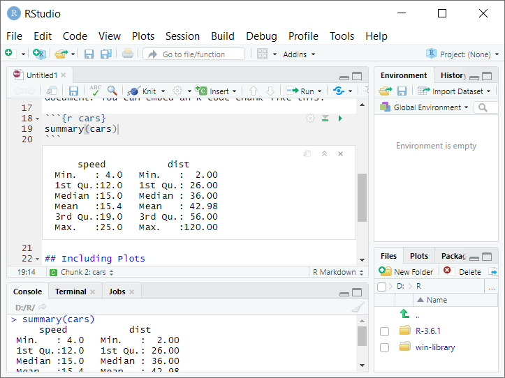
Look in the console window at bottom left–there you’ll see that RStudio behaves
as if you had typed summary(cars) into the console, and displays the output.
In the source window at top left, the chunk output is also displayed immediately
below the code chunk, inserted between lines 20 and 21. You can click on ︽ to
collapse this output, or on x to clear it. You can try the same with graphics:
click inside the third code chunk named “pressure,” on lines 26-28, and select
“Run Current Chunk” again. This should display a plot in the source window.
When your code is complete and ready to be officially run and timestamped, you will use knit to create the .html log of your code. Select “Knit” from the menu above the source window (to the right of the “Run” menu). This will open a dialog box asking you where to save the files you’re creating–for this one, don’t save to the repository (this is a test, other people don’t need these files). Just pick somewhere else on your hard drive and give a temporary name. Now you’ll see a nicely-formatted .html file with your formatted Markdown and the outputs of your R code.
Okay, two more quick tweaks. First, RStudio tends to want to autosave your workspace, which can be convenient for someone just working on their own computer but a potential source of confusion when multiple people are working collaboratively across multiple computers. Go to “Tools > Global Options… > General” and uncheck “Restore most recently opened project at startup,” “Restore previously open source documents at startup,” and “Restore .RData into workspace at startup,” and change “Save workspace to .RData on exit:” to “Never.”
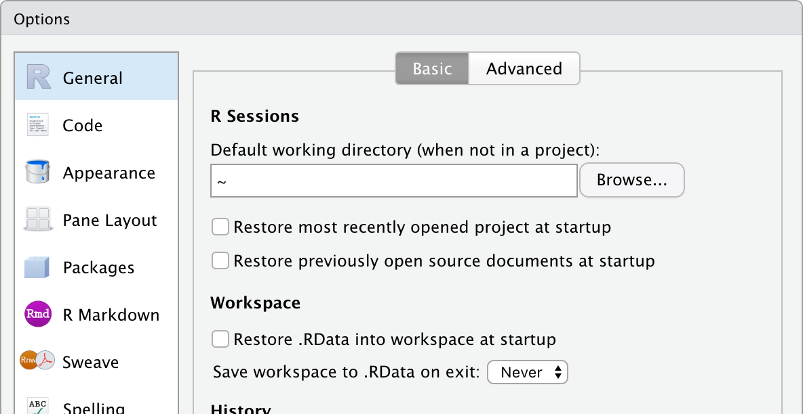
Also, we will try to keep the line length of our code less than 80 characters. Go to “Tools > Global Options… > Code > Display” and check the box for “Show margin” with “margin column” set to 80. This will draw a reminder line. When your code lines overrun the 80 character limit, break them up into multiple lines (if feasible) and use spaces to align them.
9.2.3 GitHub
Some of the uses of GitHub in our lab have been explained already in the decisionlabucsf website README, the private decisionlab repo README, and in this handbook Chapter 3: Lab Resources Overview. Like Google Docs, GitHub allows multiple people to work collaboratively on the same piece of code, keeping track of who made what changes and when, making it easy to reverse changes that have been made, and allowing different versions to be developed at the same time.
9.2.4 SourceTree
Up until now, you might have used GitHub directly thouugh the GitHub website at www.github.com –e.g., to update your lab profile or to update one of the lab notebooks. While this is fine for editing Markdown and YAML files, now we want to use our private GitHub repository to store scripts and code for use in RStudio. (Also for other packages like Matlab, Stata, etc.) RStudio can’t read files from the github.com website directly, so we’re going to use SourceTree to sync our repository to a local folder on your computer. Go to confluence.atlassian.com/get-started-with-sourcetree/install-sourcetree-847359094.html and follow the instructions to install SourceTree on your computer. (It now appears that you need to create a “BitBucket Cloud account” to set up SourceTree, which you can do and then ignore the BitBucket account.) When SourceTree is installed, connect it to your GitHub account using your GitHub username and password.
We’ll discuss using SourceTree in more detail in Step 1. One quick note here: we do want to be really careful with pulling (which will rewrite the contents of your local folder to match the GitHub repository) and pushing (which will rewrite the contents of the GitHub repository to match your local folder). So please pay attention to what SourceTree is doing here: if you’re trying to push changes to just one file but you notice that SourceTree is planning to make changes to a hundred files, slow down–that might be a sign that something has gone wrong. If you’re not sure what is happening, feel free to send me a question in Slack!
9.3 Step 1: Clone the decisionlab repository to your computer
In this pathway, we want RStudio to deal with files in two different places. The data files all stay on the R: drive, but the .Rmd and .html files go in GitHub. I’m assuming you already have the R: drive mounted, so now let’s use SourceTree to get a copy of the repository on your computer. When you create this copy, this is called “cloning” a remote repository.
Create a new local folder on your computer. To keep our scripts consistent, call this
“decisionlab” and put it in your user directory. That is, if you’re using a
PC this new folder should be C:\Users\[YOURNAME]\decisionlab (where [YOURNAME]
is your username on the computer), and if you’re using a Mac this new folder
should be Users/[YOURNAME]/decisionlab. Now obtain the URL for cloning the
repository from the GitHub website (remember, you want the private “decisionlab”
repo here, not the public “decisionlabucsf” repo that we use for the website)
by finding the green button for “Clone or download” and copying the URL for the
repository:
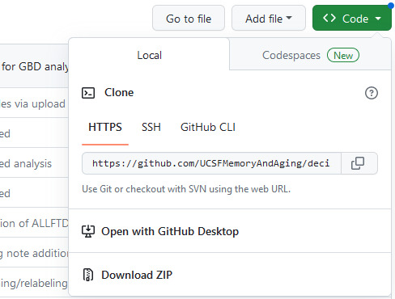
Now open SourceTree, and go to File > Clone/New… This will open a window as seen below. For “Source Path/URL:” paste in the URL from GitHub for cloning. For “Destination Path:” give the address of the local folder you’ve just created. When ready, press “Clone.”
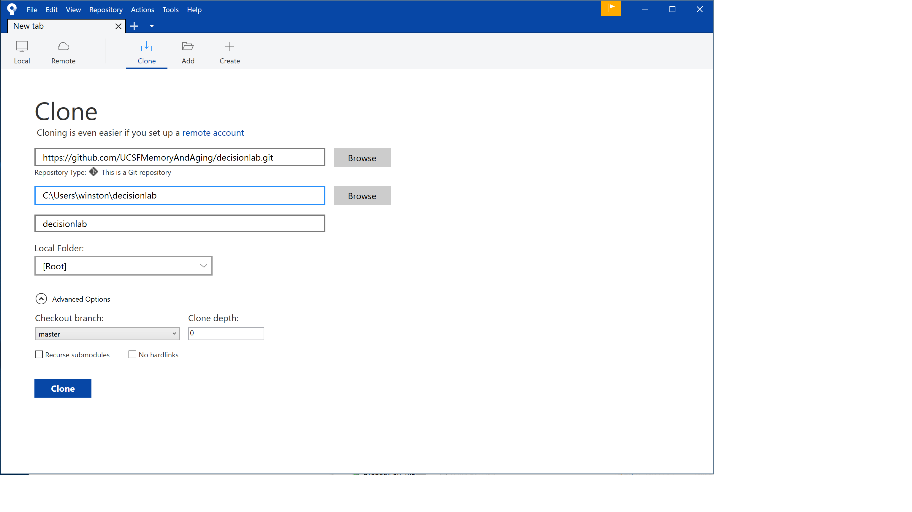
Now you’ll have a local copy of the repository on your computer, and everyone else in lab will have a local copy of the repository on their computers. (Another reason why we don’t want to put huge files in the repository–they will clog up everyone’s hard drives and make syncing really slow for everyone. So keep the files light, no Word or Powerpoint files or datasets.) From now on, when you want to work with the files in the repository, you will:
- Start SourceTree
- Pull: get the most recent version of the files on your computer (otherwise if someone else has been editing the file since the last time you synced your local repo to the remote shared repo, you’re going to create a conflict)
- Do your work in RStudio, and save updated or new local copies of the files to your local repo folder
- Commit: prepare any changed files in your local repository (e.g.,
C:\Users\[YOURNAME]\decisionlab) to go in the shared repository, including a quick description of what you’ve done (“staging”) - Pull: check again that you’re totally up to date with the online files (e.g., in case other people have also been working on them without your knowledge)
- Push: update the shared remote repository to include the new changes you’ve made, so now everything in local repository and the online repository should match again
To help you remember, when you look at the top of SourceTree, you’ll see the last 3 operations in order: Commit-Pull-Push. This is what you always do when saving your work to GitHub:

Now that you’ve set up your local repo, let’s take a look at it and the R: drive. Let’s suppose you’ve just collected data for a new task we’ll just call “blah.” Right now, because this is the first time you’ll be looking at the data, you make a new folder for your data on the R: drive and create a new folder for “blah” inside your local GitHub repo:

9.4 Step 2: Save the original dataset to the R: drive
Most of our data will be collected in e-Prime or in Qualtrics. Save the file, e.g. directly from Qualtrics, in your new folder on the R: drive. Usually this will either be in CSV or Excel format. (Qualtrics will export the CSV file using its own ugly naming convention, which you don’t need to change.)
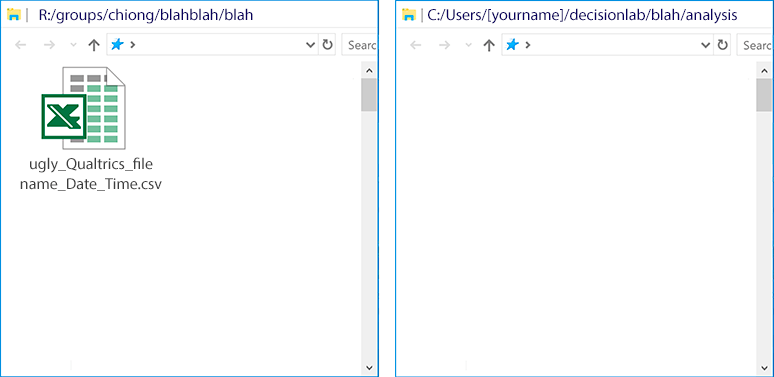
From now on we only read this data file. We don’t save any changes to it. If we ever had to re-download the data file from Qualtrics to the R: drive again (e.g., if there was some crash or a data loss), we could reproduce every step in the analysis again, regardless of what we do from this point forward.
9.5 Step 3: Clean the data in RStudio using an RMarkdown (.Rmd) and creating an .html log, creating a new .Rda data file on the R: drive
Because we’re not going to save future changes to this CSV file, we’re going to use R code in an .Rmd file to create a clean data file in R format (.Rda). When this is complete, knitting this .Rmd file will run all of the embedded R code (so, rewriting the .Rda file if you have preliminary versions you created while editing the code) and create documentation in the form of an .html log. The .Rmd and .html files go in your local copy of the repository (to be pushed to GitHub by SourceTree), and the .Rda file goes on the R: drive. (This is a little contrary to how RStudio likes to work, which is having the code and data files in the same directory, but is necessary for us to preserve the confidentiality of our participant data.)
As an example of a data cleaning file, see
AgingCog/analysis/moral-dilemma/moral-dilemma_01_clean-merge-split.Rmd.
At the top you’ll see two code chunks called “timestamp” and “setup,” a version
of which we
probably need in every R Markdown file that we run for the lab. When you create
your own .Rmd file you’ll use “timestamp” to run the R command Sys.time() to
note when the file is knit and write this
into the .html log. When you create your own .Rmd file, you’ll use “setup”
to tell RStudio which folders we want to use for the “repofolder” (the folder
in the GitHub repository where we’re putting
our .Rmd and .html files) and “datafolder” (the folder on the R: drive where the
.csv and .RDa files will go). You’ll need to check these values twice, because
we want the code to run regardless of whether someone else is doing this on a
Windows machine or a Mac; the Windows code also includes a workaround to account
for the fact that people have different usernames. This also includes an address
for “rdrivepath” in case we want to reference other things on the R: drive–this
points to different paths on Windows and Mac machines. Finally, the “setup”
chunk will be used to load any special libraries that RStudio needs to run the
code. For our hypothetical example for task “blah”:
```{r setup}
if (Sys.info()["sysname"] == "Windows"){
repofolder <- paste("C:/Users/", Sys.getenv("USERNAME"), "/decisionlab/blah/analysis/",
sep = "")
datafolder <- "R:/groups/chiong/blahblah/blah/"
rdrivepath <- "R:/"
} else if (Sys.info()["sysname"] == "Darwin"){ # not sure why MacOS is "Darwin" but it is...
repofolder <- "~/decisionlab/blah/analysis/"
datafolder <- "/Volumes/macdata/groups/chiong/blahblah/blah/"
rdrivepath <- "/Volumes/macdata/"
} # probably good to add another condition for Unix, later on...
library(readr)
library(readxl)
knitr::opts_chunk$set(echo = TRUE)
knitr::opts_knit$set(root.dir = datafolder)
```Before we get too far along, let’s save the .Rmd file. Again, this goes within the decisionlab repo local folder on your computer, which you created in Step 1. (From where it can then be pushed to the lab GitHub repo.) Now you’ll have two files: your original data file on the R: drive, and the .Rmd file that you’re currently working on in your local repo:
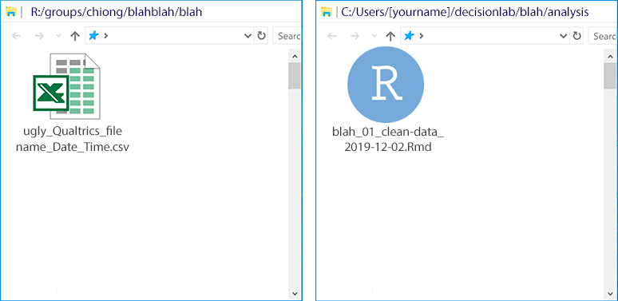
Note that, since you haven’t actually knit this file yet, you haven’t created an .html file. Select “Knit” from the top of the source window. You’ll see some output run by in an “R Markdown” tab of the console window, and then R will display an .html file based upon your R Markdown file, displaying the two code blocks we have so far:

Note the white box in which it displays the output from Sys.time()–this is a
timestamp of exactly when the .html was knit from the .Rmd file. This .html file
will also show up in your local repo subfolder, preserving a log of what you’ve
done:

Okay, let’s keep working on your .Rmd file. Again, see the example file for moral-dilemma in AgingCog for an example. In general, what you’ll do is test out code in the console and check that the code does what you want it to do (e.g., by reviewing the variables and datasets created in the environment), and then copy the working code that you want to keep into code chunks into your .Rmd file in the source window.
But there’s one finicky thing about directories. In general, R always executes
commands relative to a “working directory”–that’s the folder where it’s reading
and writing files. When R Markdown knits your html file, the code above
includes knitr::opts_knit$set(root.dir = datafolder)–this tells it to
use “datafolder” as the default directory for reading and writing files. But
when you’re working interactively in the console and using run to test your
code chunks, it doesn’t see that code and know to look in “datafolder.” So,
you’ll need to do 3 things:
- Run your “setup” code chunk by clicking in the source window at upper left, navigating to place your cursor somewhere inside the setup chunk, and selecting “Run Current Chunk.” In your workspace at upper right, this should create values for “datafolder,” “rdrivepath,” and “repofolder” with Windows locations if you’re in Windows and with Mac locations if you’re working on a Mac.
- In the console window at bottom left, type
setwd(datafolder)and press Enter. This will change your current working directory to “datafolder” to match your R Markdown script. - Just to check that you’ve done this correctly, in the panel at bottom right select “More > Go To Working Directory.” This should show you the datafolder that you’ve specified.
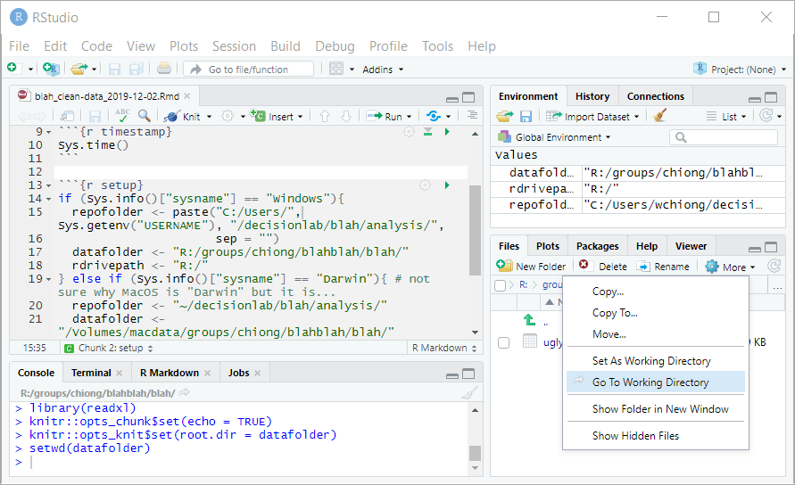
The next step is to import the Qualtrics data into RStudio so that you can start cleaning the dataset. Here, you’ll use the GUI in RStudio to perform some operations, for which the corresponding code will show up in the console window. Now the panel at bottom right should show your datafolder, which includes the CSV file that you imported from Qualtrics. Click on this file and select “Import Dataset…”
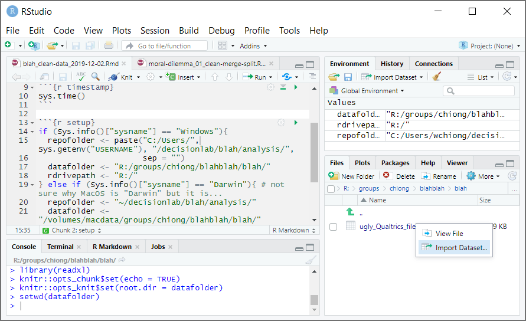
This will open a new window with options for importing this dataset, and a handy preview of what the dataset will look like with those options once imported. More importantly, on the bottom right is a “Code Preview” window–this shows you what you would need to write in R code in order to perform the same operation. Also, there’s a clipboard icon that will copy out this code for you to use:

Change the “Name” to something more reasonable, like “blah_qualtrics_df.” (The suffix "_df" is a useful convention for marking an object in the workspace as a dataframe.) You will notice (you might need to click out of the text field, so that it updates) that the code in the “Code Preview” window changes accordingly. Also, uncheck the option for “Open Data Viewer.”
You could now just click “Import” to import the dataset through the GUI. However, for our purposes we’re mainly interested in generating the code that will import the data, rather than just importing the data. So click on the clipboard icon to copy the code, and then click “Cancel” to exit this window.
Now you can paste this code into the console window to make sure that the code works as intended. Press Enter, and you should see the dataframe “blah_qualtrics_df” in your workspace:
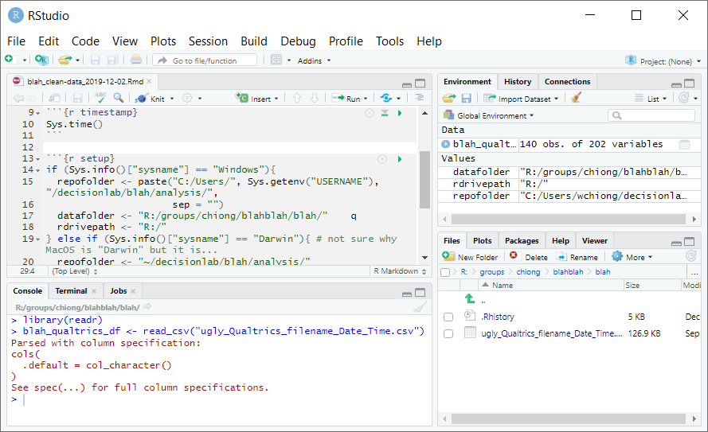
If you like the code and want to keep it, paste it into the R Markdown file. Below the “setup” code chunk, start a new section with a header such as “Data cleaning.” After this you can write a description of what the next code chunk is supposed to do, and you can create a new code chunk–call it “file-import”:
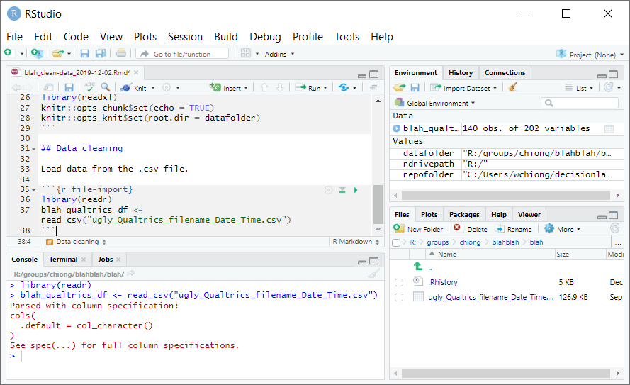
There will be a lot of other cleaning to do before the data can be analyzed. For instance, when Qualtrics exports CSV files the first three rows are different versions of the header (info about the columns), but R will assume that the first row is the column name and rows 2 and 3 are your first two observations. So you’ll need to extract the column info you want, and then drop the first two rows because they’re not observations. You’ll also want to convert any date strings in the dataframe to proper R dates. So soon this part of your R Markdown file will look like this:
## Data cleaning
First, load data from .csv file. Then drop first two rows from Qualtrics, and
convert Qualtrics datstrings to R dates.
```{r file-import}
library(readr)
blah_qualtrics_df <- read_csv("ugly_Qualtrics_filename_Date_Time.csv")
blah_qualtrics_df <- blah_qualtrics_df[-c(1,2),]
blah_qualtrics_df$StartDate <- as.POSIXct(blah_qualtrics_df$StartDate, format = "%Y-%m-%d %H:%M")
blah_qualtrics_df$EndDate <- as.POSIXct(blah_qualtrics_df$EndDate, format = "%Y-%m-%d %H:%M")
blah_qualtrics_df$RecordedDate <- as.POSIXct(blah_qualtrics_df$RecordedDate, format = "%Y-%m-%d %H:%M")
```You may also need to drop other observations (e.g., patients we collected data on who don’t have the diagnoses of interest, subjects who failed control conditions… though it might be better to create a new variable named something like “badobs” with 1s and 0s, which you can just use to exclude subjects from your analysis later on rather than delete entirely), recode variables, create new variables, etc. You probably won’t finish the code for data cleaning all in one sitting!
When you’re done working for now, to save the work you’ve done so far you need to save your .Rmd file to the local repository folder. Then, to put this file (and your .html file if you’ve knit it) on the online shared repo, go back to SourceTree and commit-pull-push.
When it’s time to come back and work on the files, pull using SourceTree to make sure that you have the most recent version of the files on your local machine, and then open the .Rmd file again in RStudio. When you’re done with the cleaning code, your .Rmd file needs to tell RStudio to create a new .Rda file that incorporates all of your changes, in the R: drive:
## Save dataset in R format
```{r save-rda}
save(blah_qualtrics_df, file="blah_clean_qualtrics_df.Rda")
```Now when you knit the .Rmd file, it will create a new .Rda file on the R: drive, and will also re-write the .html file to your local repository in your user folder. (This is good, now you also have a timestamp of when the .Rda file on the R: drive was most recently created.)

Don’t forget to save your completed .Rmd file, and commit-pull-push to get your updated .Rmd and .html files on to the shared GitHub repository.
9.6 Step 4: Analyze the data using other .Rmd files (saved in GitHub), generating more .html logs (in GitHub) and more .Rda files as necessary on the R: drive
Again, once you’ve created a clean dataset, you won’t touch the original .csv or Excel data file in the R: drive anymore. Instead, you’ll create some new .Rmd files in your local GitHub repository that read the data from the clean dataset. We always want to be able to retrace our steps, so if these new .Rmd files include manipulations of the data that we want to keep (like parameter estimates from a regression), then we save these in a new .Rda file on the R: drive. For instance:
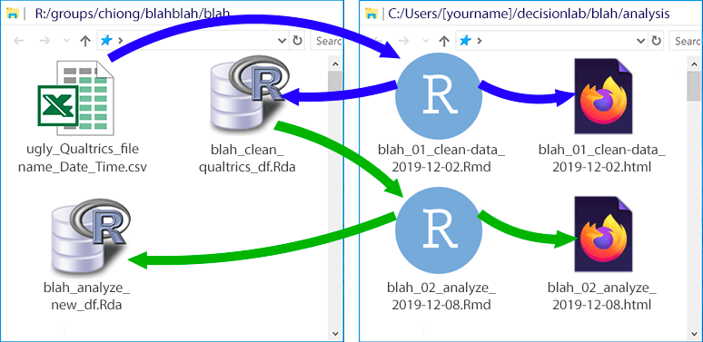
As a general principle, if an R Markdown script reads data from a given .Rda file, then that .Rmd should not also save changes to that same .Rda file. Instead, if there are any manipulations made to the data that need to be saved, then these should be saved in a new .Rda file. (In other words, if we’re drawing a map with arrows like the one above, showing the dependencies between .Rda and .Rmd files, there should be no “closed loops”–the flow between any two files should always be in only one direction.) Otherwise, we may not be able to retrace our steps if we need to reconstruct any of these files. (At this point, it might also be helpful to create a README.md file in the local GitHub repository, explaining what order the R Markdown scritps should be knit in to re-create the data sets, and how all the files are related to one another.)
Just to complete the illustration, here’s a hypothetical later stage of the project:

For these later stages (creating the tables and figures), there are no manipulations of the data that need to be recorded, so there’s no need to create more .Rda files. In the first stage (in purple), we read out the original .Rda file to make some tables. The table output gets written in the .html file, and we don’t need to create new files on the R: drive. In the second stage (in orange), we use some of the created variables from our analysis (e.g., parameters from a regression) to make a figure. This .Rmd file generates its own .html file, and we save a vector image (see again More about figures in Chapter 7 on Authorship) of the figure in the R: drive (to avoid cluttering the GitHub repo).
9.6.1 Some observations
Note now that:
- All datasets with PHI and identifiers (names, demographics, etc.) stay on the R: drive. All big files, including datasets and graphic files, stay on the R: drive.
- Worst case scenario: you accidentally overwrite files on the R: drive, or even the R: drive gets wiped out. You can still recover every step of your analysis. The original data file csv can be downloaded again from Qualtrics. GitHub keeps timestamped versions of every file in the online repository. All the information you need to reconstruct the .Rda and graphics files on the R: drive are contained in the .Rmd files in the GitHub repository.
- What if you collect more subjects, e.g. if journal reviewers ask for a larger sample? Download the new, csv export file from Qualtrics. Edit and rename the data cleaning .Rmd file that you made before, and inside this new .Rmd file create new filenames for the .html and .Rda files that are created. Now you can reliably reproduce all of the steps you used before on your new, expanded dataset.